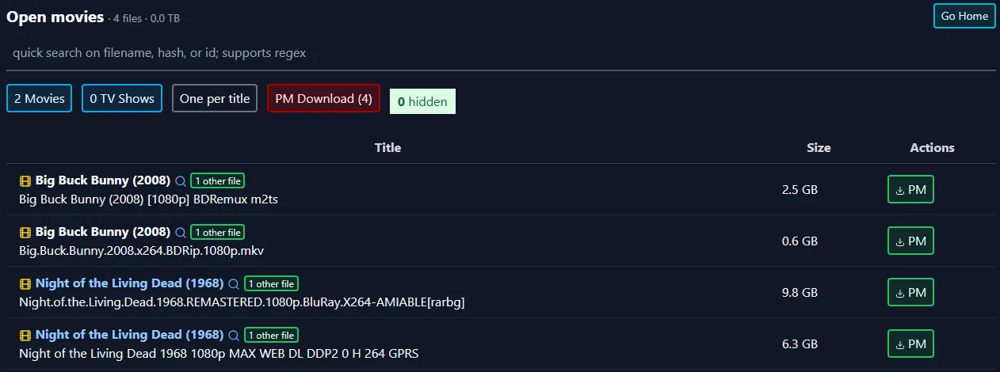
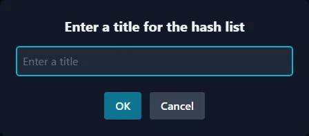

DMM hash lists: adicione a biblioteca de alguém à sua
Uma hash list é uma lista de releases que alguém compartilhou da sua biblioteca de debrid pelo DMM. Abra uma, entre no DMM com o seu serviço de debrid e clique no botão do seu serviço: os releases vão para a sua própria conta. As listas compartilhadas ficam em hashlists.debridmediamanager.com, e você pode compartilhar a sua na aba Library do DMM, com Share List.
Uma lista guarda os nomes dos releases, os hashes e os tamanhos. Não tem arquivos nem contas.
Encontrar uma lista
- Na página inicial do DMM, clique em Hash lists. Ela abre hashlists.debridmediamanager.com com uma lista aleatória. Previous hash list, Random hash list e Next hash list trocam de lista.
- As pessoas postam listas no fórum hashlists do Discord. Cada uma é um link como
https://hashlists.debridmediamanager.com/<id>.html. Ao abrir, a lista abre no DMM.
Adicionar uma lista à sua biblioteca
- Abra a lista. Se aparecer Login to RD/AD/TB/PM/OC/DL to download, faça login no DMM no mesmo navegador primeiro (veja como fazer login) e depois abra a lista de novo.
- O DMM verifica quais releases o seu serviço já tem. Ele mostra só esses e deixa de fora o que já está na sua biblioteca. A caixa verde hidden conta o que ficou de fora.
- Filtre se quiser:
- Movies e TV Shows mostram um tipo só. Os números contam títulos, não arquivos.
- One per title mantém o melhor release de cada título.
- O chip verde other files ao lado de um título lista todos os releases dele.
- quick search on filename, hash, or id; supports regex pesquisa na lista.
- Clique no botão de uma linha (RD, TB, AD, PM, OC ou DL) para adicionar só esse release.
- Ou clique em RD Download (TB Download, PM Download e assim por diante) para adicionar todos os releases mostrados. O número nele é a quantidade. O DMM pergunta antes, por exemplo Add 11 releases to Premiumize?: clique em Add 11 para começar.

Show All também lista os releases que o seu serviço não tem, e Show Instant volta para os que estão em cache.
RD Download só adiciona releases que o Real-Debrid já tem, um por minuto, porque o Real-Debrid pausa contas que adicionam mais rápido que isso. Sessenta releases levam cerca de uma hora. As adições rodam na página, então mantenha a aba aberta até aparecer Started 60 downloads. TorBox e AllDebrid pulam tudo o que não estiver em cache.
Compartilhe sua própria biblioteca
- Na página inicial do DMM, clique em Library.
- Pesquise ou marque as versões que você quer compartilhar. Se nada estiver marcado, tudo o que aparece na tela é compartilhado.
- Clique em Share List (o botão mostra Share (3) quando você marca três). Digite um nome em Enter a title for the hash list e clique em OK.
- O DMM abre o novo endereço da sua lista em hashlists.debridmediamanager.com. Pode aparecer um erro 404 por um ou dois minutos enquanto a lista é publicada. Atualize a página e então compartilhe esse endereço.

As listas compartilhadas são públicas. Qualquer pessoa com o endereço pode abrir, e o Random hash list pode mostrar a sua para desconhecidos. Só nomes, hashes e tamanhos são incluídos: nunca sua conta, sua chave ou um endereço de tracker.
Para compartilhar uma única versão sem publicar nada, clique no ícone de compartilhar no fim da linha dela na biblioteca (ou em Hashlist nos detalhes). O DMM abre uma lista com só essa versão. Copie o endereço dessa página e envie.
Quando algo está errado
Ficou com alguma dúvida? Pergunte no fórum dmm-support no Discord.
Perguntas
Como adiciono hash lists à minha própria biblioteca?
Abra a lista, faça login no DMM com seu serviço de debrid e depois clique no botão do seu serviço em uma linha, ou em RD Download (ou no Download do seu serviço) para tudo que estiver na tela. Veja
Por que todos os itens da minha hash list estão ocultos?
DMM esconde o que já está na sua biblioteca e o que o seu serviço não tem em cache. A caixa hidden mostra quantos são. Show All mostra o resto.
Por que séries de TV não aparecem em uma hash list?
Clique em TV Shows no topo da lista. Se ela mostrar 0 TV Shows, essa lista não tem séries: a maioria das listas compartilhadas é de filmes. Séries que o seu serviço não tem também ficam ocultas, então tente Show All.
Por que adicionar uma hash list é tão lento?
No Real-Debrid, o DMM adiciona um lançamento por minuto para que o Real-Debrid não pause sua conta. Os outros serviços são mais rápidos.
Existe uma API para consultar as hash lists?
Não existe API de busca. Cada lista compartilhada é um arquivo no repositório de hashlists público do GitHub. Cada página aponta para o DMM com a lista empacotada no link depois de # (JSON com nomes, hashes e tamanhos comprimido com lz-string). Uma lista muito grande fica ao lado dela como lists/<id>.txt.
Compartilhar uma lista compartilha a minha conta?
Não recebi nenhum texto para traduzir. Por favor, cole o trecho da documentação que você quer que eu traduza.